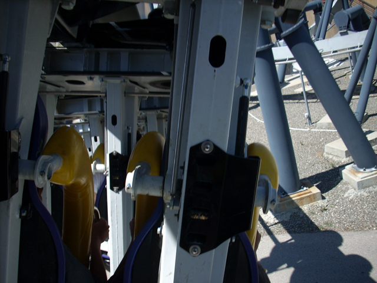
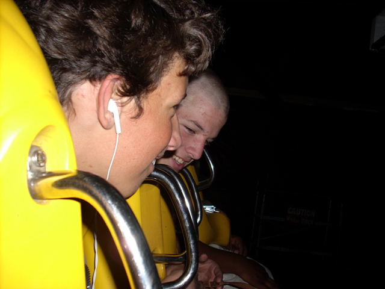
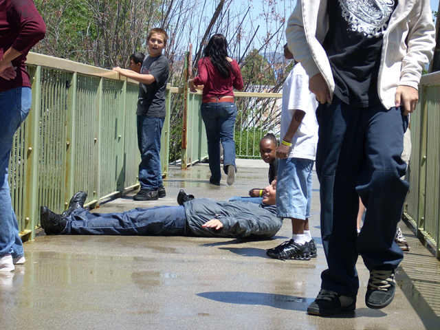
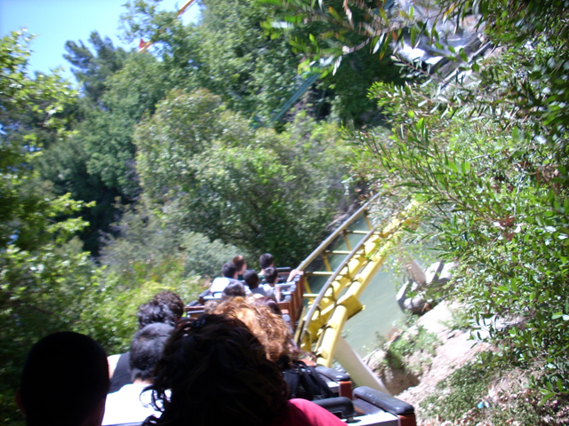
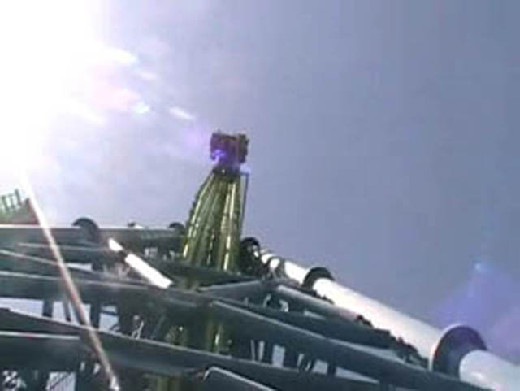
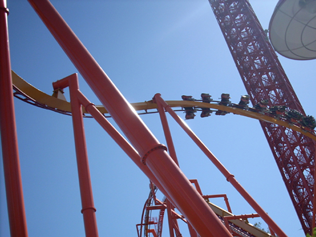
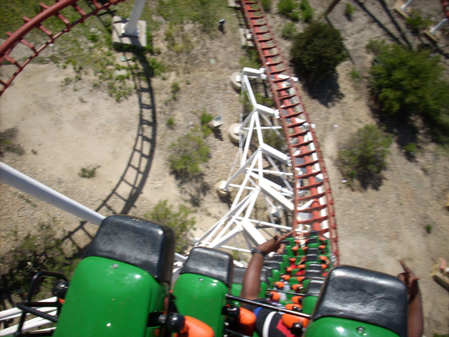
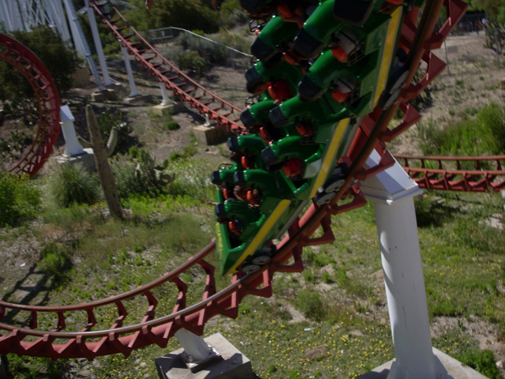

15th Bday Party
Here we are at Magic Mtn again. With the Knex Science day today, It seemed like it was going to be crowded today.
Heres our group for today.
We went right for Goliath, where there was no line. BTW, heres a shot of the park from the lifthill.
Allie is enjoying the only airtime on Goliath.
Its Cody! Man of Steel! Give him some candy or he'll kick your shin!
Why do I see a light whenever I go in the Helix of death?
I see a $20.00! I MUST GET IT! GRRR!!!!!!!!!
Here you can see Cody being a total moron.
Dude, Codys Freakin Insane!

Here we are riding just another B&M Inverted.

Its not a very good idea to mix stupid people with High G Forces, But its too late now.
 Going through corkscrews makes me think of the Old Corkscrew @ Knotts.
Going through corkscrews makes me think of the Old Corkscrew @ Knotts.
Andrew is so brave he stood up on a rollercoaster!!!! And I thought only Cody did that.

And I thought Cody was a dumass last time.
Here you can see Cody marking his territory.
NEVER RIDE THE SCRAMBLER WITH CODY AFTER HE SOAKED HIMSELF BY TIDAL WAVES BRIDGE!!!!!!!!!!!!
What the hell is Cody doing?

From this angle, Magic Mtn actually looks really nice.
Hi, I'm Alisa and I'm just relaxing and enjoying my extra ride on Goldrusher.
When you mix stupid people with high forces, they grow antler ears!!!!
I could afford a ride on Thrill Shot with the $20.00 I found on Goliath!!!
The gods must be pleased today because the towers did not collapse.

Are we the only people on the planet who know about this single riders line?
OH MY GOD!!!!!! My shoe is haunting me!!!!!!!!
How many people can you fit in a blender?

If you people think you are actually flying, then you should lay off the pot.
Time to go to everyones favorite saloon, The flying mule saloon.

Wahoo!!! Painful First Drops are Awsome!!!!!

By now, our skulls have been shattered into a thousand peices.
When I listen to my Ipod, I can't feel a thing.
While we wait for Cody to go on Viper 7 times in a row, We got some snowcones.
Damn, I only rode twice. So I got an Icee.
 Whats wrong with this picture?
Whats wrong with this picture?
Here we are being sad and pathetic on the kiddy coaster.
 GRRR!!! WE HAVE BEEN DEFEATED BY THE KIDDY COASTER!!! IT'S JUST TOO STRONG!!!!!!
GRRR!!! WE HAVE BEEN DEFEATED BY THE KIDDY COASTER!!! IT'S JUST TOO STRONG!!!!!!
 There's only One excuse for a picture this blurry, We're riding the Balloons.
There's only One excuse for a picture this blurry, We're riding the Balloons.
This ride sucks so much that Andrew and Isaac lost it.
 Eventualy, We'll get through that track and get into the loop.
Eventualy, We'll get through that track and get into the loop.
 I see the entrance to heaven!!!! And heaven leads us straight to the Valencia Mall!!!!
I see the entrance to heaven!!!! And heaven leads us straight to the Valencia Mall!!!!
 AWESOME!!! GEARS OF WAR KICKS ASS!!!!!
AWESOME!!! GEARS OF WAR KICKS ASS!!!!!
 A double decker carousel inside a mall with a spinning teacup, This is just too perfect.
A double decker carousel inside a mall with a spinning teacup, This is just too perfect.
I never thought I'd say this, But this sick son of a bitch is better than the Balloons!!!
"GRRR!!! DAMMIT CODY!! STOP TEASING ME ABOUT DISNEYWORLD WITH YOUR BROCHURES AND PARK MAPS AND BOOKS YOU FIND IN THE DISNEY STORE!!!!!!!"
Sweet Factory. A Candy Lovers Wet Dream!!!!!!!!
I mean just look that that! When does it stop being real and start being just a reflection in the mirror.
Don't even think about using Diabetes as an excuse to avoid the Sweet Factory.
"Kevin, you are offically a dumass. I bought a Pack of Starburst of $1.25 and you bought a peice of licorice for $0.22! AND YOU CALL ME INSANE FOR SOAKING MYSELF ON TIDAL WAVES BRIDGE!!! YOU DISGUST ME!!!!!"
 We'll end this update playing BS @ Johnny Rockets!
(Cody, You are exposing your cards like a total idiot! I used this picture to cheat in the game! And you call me an idiot! You suck! HA! HA!)
We'll end this update playing BS @ Johnny Rockets!
(Cody, You are exposing your cards like a total idiot! I used this picture to cheat in the game! And you call me an idiot! You suck! HA! HA!)
Home